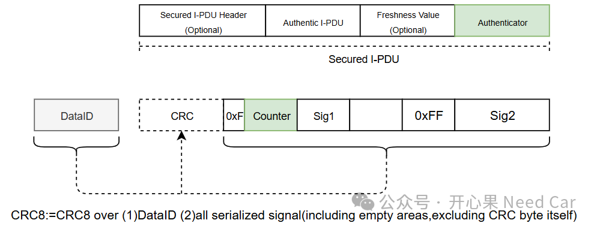
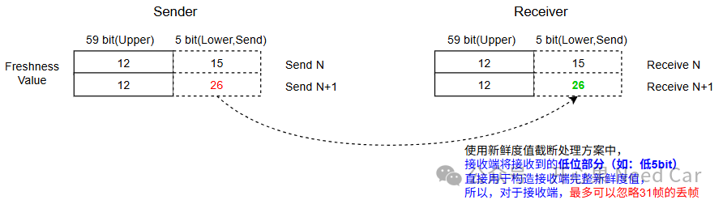
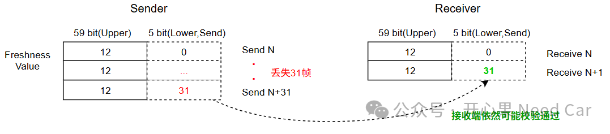

这几篇包含作者逐步展开的比较。请分别核对来源认证、新鲜度、功能安全故障覆盖等目标，不把SecOC普遍替代E2E作为结论。实现应回到项目使用的AUTOSAR版本和安全需求。
AUTOSAR SecOC要求（R24-11参考）开心果 Need Car · 2026-03-20T06:21:00+08:00 · 微信原文
1.E2E和SecOC的侧重

Counter是E2E保护机制里的一个序列号，作用如下：
检测数据是否重复
检测数据是否丢失
判断通信顺序是否正确
支撑 Alive / Sequence Check（存活与顺序检查）
DataToAuthenticator = Data Identifier | secured part of the Authentic I-PDU | Complete Freshness Value
其中，完整的Complete Freshness Value既然参与计算，意味着，接收端构造的Complete Freshness Value需要和发送端保持一致。如此，计算的CMAC（假如使用CMAC计算）才能一致。那么，这里思考一个问题：如果发送端某次发送的Counter突然增加很多（相当于丢了很多帧），但是，接收端可以有效构造出完整的Freshness Value，能校验过吗？答：可以。原因如下（假设Freshness Value使用截断处理方案，且低5bit发送）：

提示：接收端构造Complete Freshness Value = Freshness Value Upper bits(eg:59 bits) | Freshness Value Lower bits(eg:5 bits)
所以，从这个层面理解，SecOC并不关注丢帧的问题，它只关注发送的身份真实性、是否重放攻击等。
如上图，假设Freshness Value使用截断处理方案，且低5 bits发送。对于接收端，只要丢帧≤31，接收端进行MAC校验时，依然可以校验通过。主要是因为接收端是无条件接收低5 bits数据，并和接收端本地的高59bit的高位拼接，构成完成的Freshness Value（64 bits），示意如下：

所以，对于E2E来说，会检测丢帧情况，但是，不能检测数据发送方身份的真实性。而SecOC虽然可以检测发送方身份真实性，但是，不能检测数据丢帧的工况。如果SecOC对新鲜度只进行检查，类似E2E的Rolling Counter校验，那么SecOC也能做到丢帧检测。然而，SecOC设计之初，就不在意丢帧的工况。
所以，使用E2E或是SecOC，需要结合项目目标需求决定使用其中一种方案还是两者均用。
往期精彩回顾